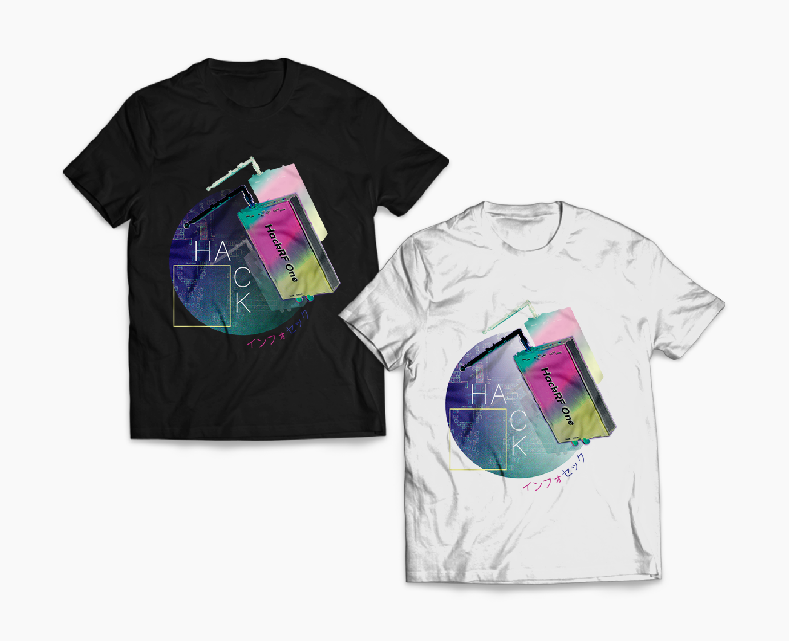
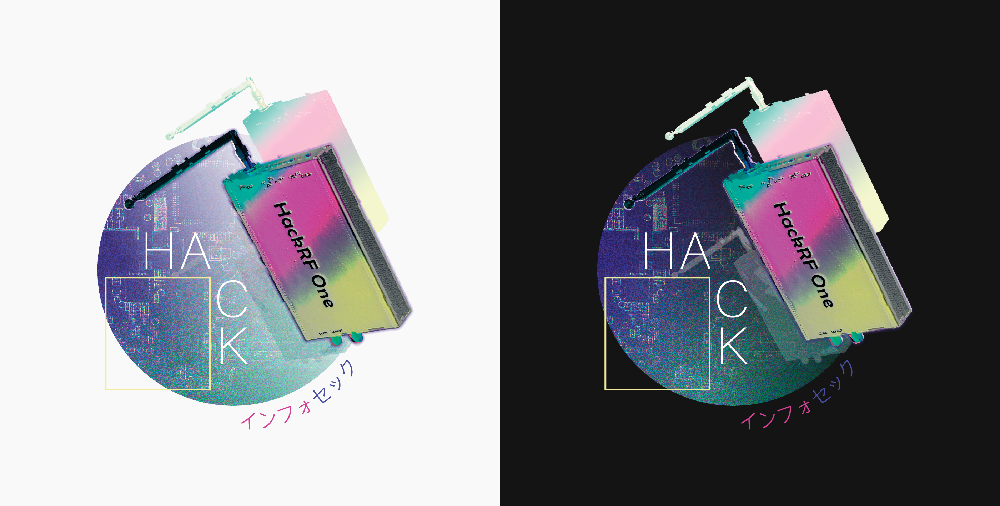
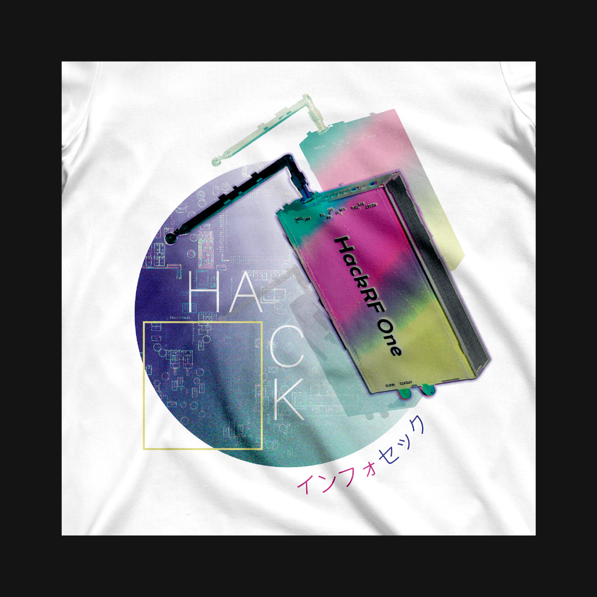
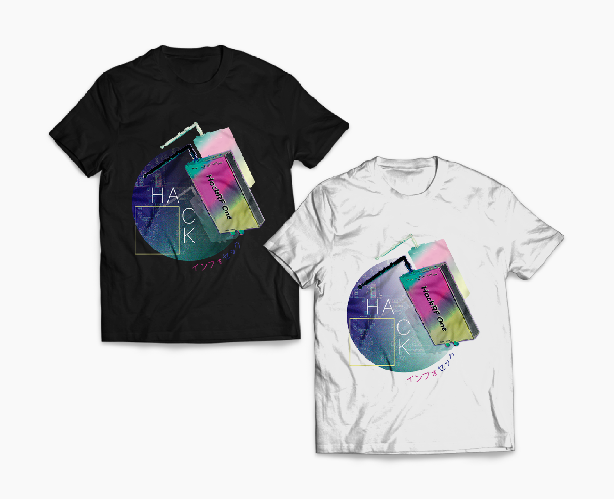
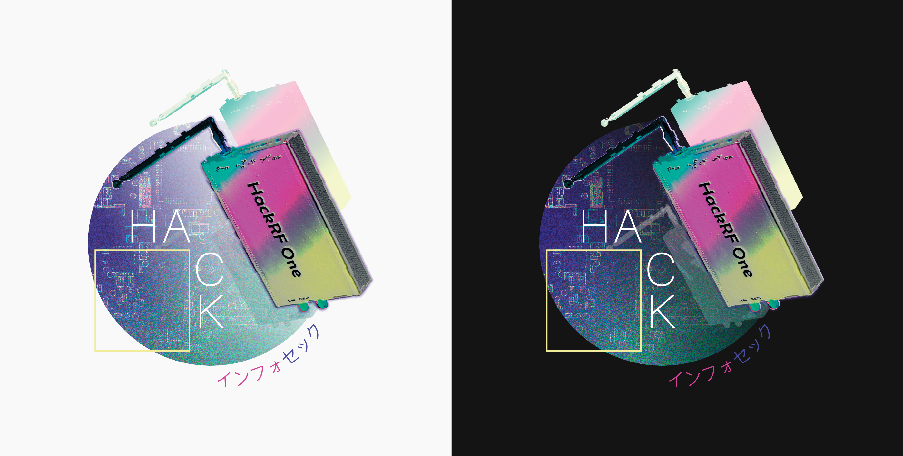
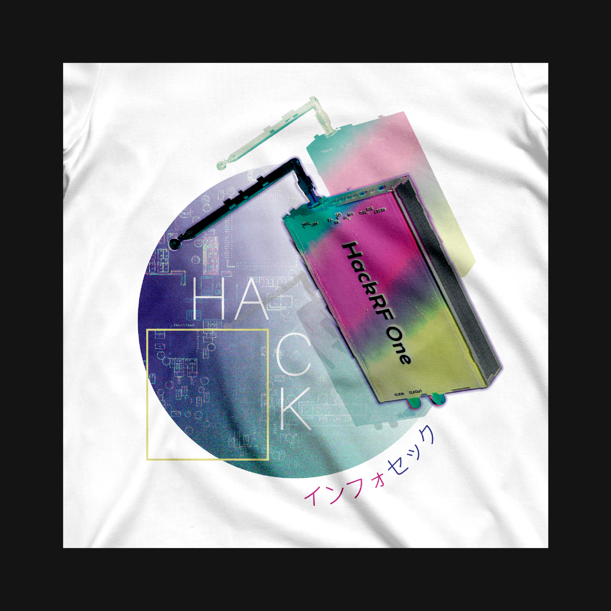

T-shirt print inspired by vaporwave aesthetics, created for the public of young infosec and cybersecurity enthusiasts. The art's base object is a HackRF One, a wide band SDR transceiver, popular in hacker scene.
It was released in 2018 at Roadsec Sao Paulo, the biggest hacker festival in Latin America.
HackRF One
🇧🇷 Estampa de camiseta inspirada na estética vaporwave, voltada para o público jovem entusiasta de segurança da informação e cibersegurança. O objeto base da arte é um HackRF One, um transceptor de SDR de banda larga, popular na cena hacker.
A camiseta foi lançada em 2018 no Roadsec São Paulo, o maior festival hacker da América Latina.
NOVEMBER, 2018.
 




